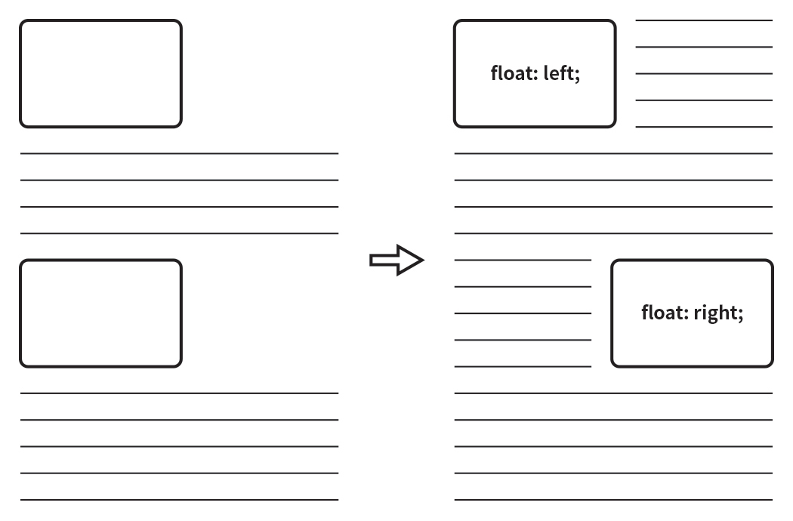
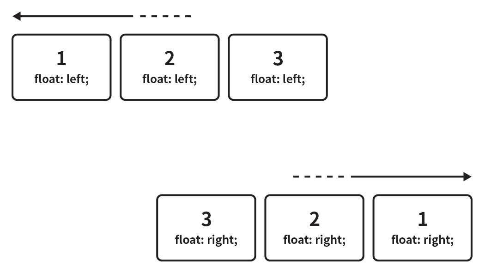
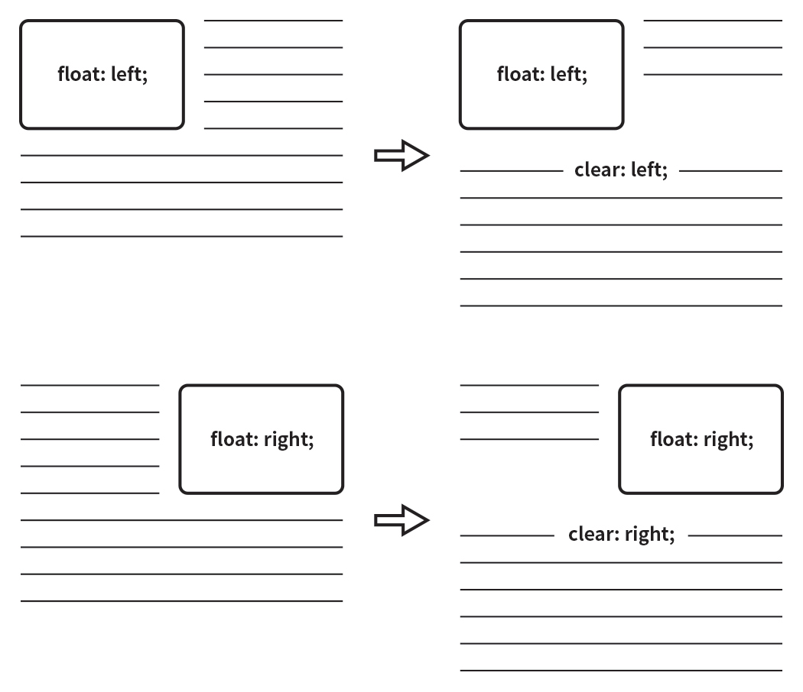
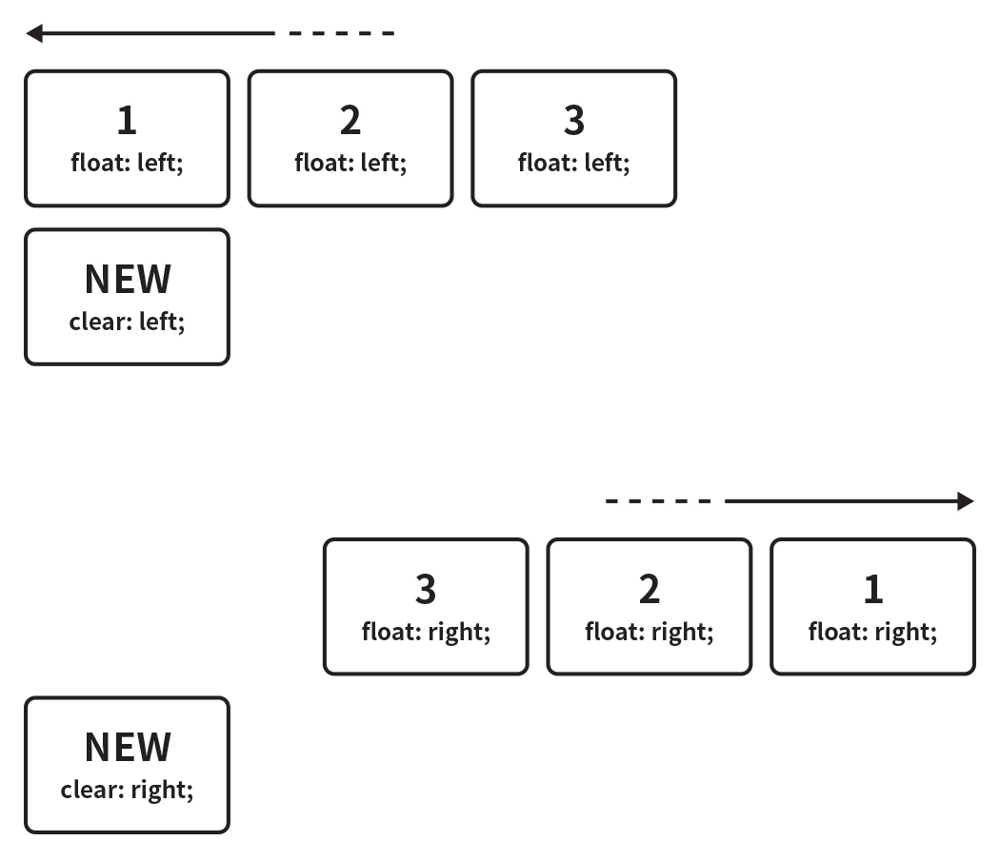

# CSS 속성 <div id="copyright"></div>
## `width` 요소의 가로 너비를 지정
### 속성 값 | 값 | 의미 | 기본값 | |---|---|---| | `auto` | 브라우저가 너비를 계산 | `auto` | | 단위 | `px`, `em`, `cm` 등 단위로 지정 | |
### 사용법 ``` width: 크기; ``` ```css .box { width: 100px; } ```
## `height` 요소의 세로 너비를 지정
### 속성 값 | 값 | 의미 | 기본값 | |---|---|---| | `auto` | 브라우저가 너비를 계산 | `auto` | | 단위 | `px`, `em`, `cm` 등 단위로 지정 | |
### 사용법 ``` height: 크기; ``` ```css .box { height: 100px; } ```
```css .block-element { display: block; width: auto; /* 100% 동등 */ height: auto; /* 0 동등 */ } .inline-element { display: inline; width: auto; /* 0 동등 */ height: auto; /* 0 동등 */ } ```
## `margin` 요소의 '외부(바깥) 여백'을 지정<span class="property shorthand" title="단축 속성"></span> > 음수 값(Negative Values)을 사용할 수 있습니다.
### 속성 값 | 값 | 의미 | 기본값 | |---|---|---| | 단위 | `px`, `em`, `cm` 등 단위로 지정 | `0` | | `auto` | 브라우저가 너비를 계산 | | | `%` | 부모 요소의 너비에 대한 비율로 지정 | |
### 사용법 ``` margin: 위 우 아래 좌; margin: 위 [좌,우] 아래; margin: [위,아래] [좌,우]; margin: [위,아래,좌,우]; ``` ```css .box { margin: 10px 20px 30px 40px; margin: 10px 20px 40px; margin: 10px 40px; margin: 10px; } ```
### `margin-top` 요소의 '외부(바깥) **위쪽** 여백'을 지정<span class="property individual" title="개별 속성"></span>
### `margin-bottom` 요소의 '외부(바깥) **아래쪽** 여백'을 지정<span class="property individual" title="개별 속성"></span>
### `margin-left` 요소의 '외부(바깥) **왼쪽** 여백'을 지정<span class="property individual" title="개별 속성"></span>
### `margin-right` 요소의 '외부(바깥) **오른쪽** 여백'을 지정<span class="property individual" title="개별 속성"></span>
```css .box1 { margin: 10px 20px 30px 40px; /* 단축속성 */ } .box2 { /* 개별속성 */ margin-top: 10px; margin-right: 20px; margin-bottom: 30px; margin-left: 40px; } ```
### 마진 중복(병합, Collapse) 마진의 특정 값들이 '중복'되어 합쳐지는 현상 1. 형제 요소들의 `margin-top`과 `margin-bottom`이 만났을 때 1. 부모 요소의 `margin-top`과 자식 요소의 `margin-top`이 만났을 때 1. 부모 요소의 `margin-bottom`과 자식 요소의 `margin-bottom`이 만났을 때 > '마진 중복'은 버그(오류)가 아닙니다. 현상을 우회하거나 응용할 수 있습니다.
#### 마진 중복 계산법 마진 중복 현상이 발생시, 중복 값을 계산하는 방법 | 조건 | 요소A 마진 | 요소B 마진 | 계산법 | 중복 값 | |---|---|---|---|---| | 둘 다 양수 | `30px` | `10px` | 더 큰 값으로 중복 | `30px` | | 둘 다 음수 | `-30px` | `-10px` | 더 작은 값으로 중복 | `-30px` | | 각각 양수와 음수 | `-30px` | `10px` | `-30` + `10` = `-20` | `-20px` |
#### 형제 요소에 발생하는 마진 중복 해결 각 형제 요소에 `float` 속성이 있을 경우 ```html <div class="box_group"> <div class="box"></div> <div class="box"></div> </div> ``` ```css .box_group { width: 240px; } .box { width: 200px; height: 100px; background: red; margin: 20px; float: left; /* 중복 해결 */ } ``` > 각 형제 요소가 수직으로 정렬될 수 있도록 부모 요소의 크기(가로 너비)를 제한했습니다.
#### 부모와 자식 요소에 발생하는 마진 중복 해결 부모 요소에 아래의 속성 중 하나를 추가 | 속성 | 값 | |---|---| | `float` | `left`, `right` | | `overflow` | `hidden`, `auto` | | `position` | `absolute`, `fixed` | | `padding` | `1px` 이상 | | `border` | `1px` 이상 |
```html <div class="parent"> <div class="child"></div> </div> ``` ```css .parent { width: 300px; height: 200px; background: yellow; margin-top: 50px; overflow: hidden; /* 중복 해결 */ } .child { width: 100px; height: 100px; background: red; margin-top: 50px; } ```
## `padding` 요소의 '내부(안) 여백'을 지정<span class="property shorthand" title="단축 속성"></span>
### 속성 값 | 값 | 의미 | 기본값 | |---|---|---| | 단위 | `px`, `em`, `cm` 등 단위로 지정 | `0` | | `%` | 부모 요소의 너비에 대한 비율로 지정 | |
### 사용법 ``` padding: 위 우 아래 좌; padding: 위 [좌,우] 아래; padding: [위,아래] [좌,우]; padding: [위,아래,좌,우]; ``` ```css .box { padding: 10px 20px 30px 40px; padding: 10px 20px 40px; padding: 10px 40px; padding: 10px; } ```
### `padding-top` 요소의 '내부(안) **위쪽** 여백'을 지정<span class="property individual" title="개별 속성"></span>
### `padding-bottom` 요소의 '내부(안) **아래쪽** 여백'을 지정<span class="property individual" title="개별 속성"></span>
### `padding-left` 요소의 '내부(안) **왼쪽** 여백'을 지정<span class="property individual" title="개별 속성"></span>
### `padding-right` 요소의 '내부(안) **오른쪽** 여백'을 지정<span class="property individual" title="개별 속성"></span>
```css .box1 { padding: 10px 20px 30px 40px; /* 단축속성 */ } .box2 { /* 개별속성 */ padding-top: 10px; padding-right: 20px; padding-bottom: 30px; padding-right: 40px; } ```
### 크기 증가 추가된 `padding` 값만큼 요소의 크기가 커지는 현상
#### 크기가 커지지 않도록 직접! 계산 ```css /* 100 x 100(px) 크기의 요소 만들기 */ .box { width: 60px; /* +40px */ height: 80px; /* +20px */ background: red; padding: 10px 20px; } ``` > `padding`이 추가된 값만큼 `width`와 `height` 값을 다시 계산합니다.
#### 크기가 커지지 않도록 자동! 계산 ```css /* 100 x 100(px) 크기의 요소 만들기 */ .box { width: 100px; height: 100px; background: red; padding: 10px 20px; box-sizing: border-box; } ``` > 직접 계산하지 않고 `box-sizing: border-box;`를 추가합니다.
## `border` 요소의 '테두리 선'을 지정<span class="property shorthand" title="단축 속성"></span>
### 속성 값 | 값 | 의미 | 기본값 | |---|---|---| | `border-width` | 선의 두께(너비) | `medium` | | `border-style` | 선의 종류 | `none` | | `border-color` | 선의 색상 | `black` |
### 사용법 ``` border: 두께 종류 색상; ``` ```css .box { border: 1px solid red; } ```
### `border-width` 선의 두께(너비)를 지정<span class="property shorthand" title="단축 속성"></span><span class="property individual" title="개별 속성"></span>
#### 속성 값 | 값 | 의미 | 기본값 | |---|---|---| | `medium` | 중간 두께 | `medium` | | `thin` | 얇은 두께 | | | `thick` | 두꺼운 두께 | | | 단위 | `px`, `em`, `cm` 등 단위로 지정 | |
#### 사용법 ``` border-width: 위 우 아래 좌; border-width: 위 [좌,우] 아래; border-width: [위,아래] [좌,우]; border-width: [위,아래,좌,우]; ``` ```css .box { border-width: 10px 20px 30px 40px; border-width: 10px 20px 40px; border-width: 10px 40px; border-width: 10px; } ```
### `border-style` 선의 종류를 지정<span class="property shorthand" title="단축 속성"></span><span class="property individual" title="개별 속성"></span>
#### 속성 값 | 값 | 의미 | 기본값 | |---|---|---| | `none` | 선 없음 | `none` | | `hidden` | 선 없음과 동일(`table`요소에서 사용) | | | `solid` | 실선(일반선) | | | `dotted` | 점선 | | | `dashed` | 파선 | | | `double` | 두 줄선 | | | `groove` | 홈이 파여있는 모양(선) | | | `ridge` | 솟은 모양(선, `groove`의 반대) | | | `inset` | 요소 전체가 들어간 모양(선) | | | `outset` | 요소 전체가 나온 모양(선) | | <a href="https://www.w3schools.com/cssref/playit.asp?filename=playcss_border-style&preval=none" target="_blank">선의 종류 보기</a>
#### 사용법 ``` border-style: 위 우 아래 좌; border-style: 위 [좌,우] 아래; border-style: [위,아래] [좌,우]; border-style: [위,아래,좌,우]; ``` ```css .box { border-style: solid dotted double inset; border-style: solid dotted inset; border-style: solid inset; border-style: solid; } ```
### `border-color` 선의 색상을 지정<span class="property shorthand" title="단축 속성"></span><span class="property individual" title="개별 속성"></span>
#### 속성 값 | 값 | 의미 | 기본값 | |---|---|---| | 색상 | 선의 색상을 지정 | `black` | | `transparent` | 투명한 선(요소의 배경색이 보임) | |
#### 사용법 ``` border-color: 위 우 아래 좌; border-color: 위 [좌,우] 아래; border-color: [위,아래] [좌,우]; border-color: [위,아래,좌,우]; ``` ```css .box { border-color: red blue #fff rgba(0,0,0,.5); border-color: red blue rgba(0,0,0,.5); border-color: red rgba(0,0,0,.5); border-color: red; } ```
### 기타 속성1 | 속성 | 의미 | 사용 값 | |---|---|---| | `border-top` | 위쪽 선 | `두께 종류 색상` | | `border-top-width` | 위쪽 선의 두께 | `두께` | | `border-top-style` | 위쪽 선의 종류 | `종류` | | `border-top-color` | 위쪽 선의 색상 | `색상` | | `border-bottom-top` | 아래쪽 선 | `두께 종류 색상` | | `border-bottom-width` | 아래쪽 선의 두께 | `두께` | | `border-bottom-style` | 아래쪽 선의 종류 | `종류` | | `border-bottom-color` | 아래쪽 선의 색상 | `색상` |
### 기타 속성2 | 속성 | 의미 | 사용 값 | |---|---|---| | `border-left` | 왼쪽 선 | `두께 종류 색상` | | `border-left-width` | 왼쪽 선의 두께 | `두께` | | `border-left-style` | 왼쪽 선의 종류 | `종류` | | `border-left-color` | 왼쪽 선의 색상 | `색상` | | `border-right` | 오른쪽 선 | `두께 종류 색상` | | `border-right-width` | 오른쪽 선의 두께 | `두께` | | `border-right-style` | 오른쪽 선의 종류 | `종류` | | `border-right-color` | 오른쪽 선의 색상 | `색상` |
## `font` 글자 관련 속성들을 지정<span class="property shorthand" title="단축 속성"></span>
### 속성 값 | 값 | 의미 | 기본값 | |---|---|---| | `font-style` | 글자 기울기 지정 | `normal` | | `font-weight` | 글자 두께 지정 | `normal` | | `font-size` | 글자 크기 지정 | `medium`(`16px`) | | `line-height` | 줄 높이(줄 간격) 지정 | `normal`(Reset.css 적용시 `1`)| | `font-family` | 글꼴(서체) 지정 | 운영체제(브라우저)에 따라 달라짐 |
### 사용법 ``` font: 기울기 두께 크기 / 줄높이 글꼴; ``` ```css .box { font: italic bold 20px / 1.5 "Arial", sans-serif; } ``` ```css .box { font: 30px / 1.5; /* ERROR */ font: bold; /* ERROR */ font: bold sans-serif; /* ERROR */ font: 30px / 1.5 sans-serif; font: bold 30px sans-serif; font: italic 30px / 1.5 "Arial", sans-serif; } ``` > 단축 속성을 사용하려면 `font-size`와 `font-family`를 필수로 입력해야 합니다.
### `font-style` 글자 스타일(기울기)을 지정<span class="property individual" title="개별 속성"></span>
#### 속성 값 | 값 | 의미 | 기본값 | |---|---|---| | `normal` | 스타일 없음 | `normal` | | `italic` | 이텔릭체(활자) | | | `oblique` | 기울어진 글자 | |
#### 사용법 ``` font-style: 기울기; ``` ```css .box { font-style: italic; } ```
### `font-weight` 글자의 두께(가중치)를 지정<span class="property individual" title="개별 속성"></span>
#### 속성 값 | 값 | 의미 | 기본값 | |---|---|---| | `normal` | 기본 글자 두께, `400`과 동일 | `normal`(`400`) | | `bold` | 글자 두껍게, `700`과 동일 | | | `bolder` | 부모(상위) 요소보다 더 두껍게(`bold`보다 두껍다는 개념이 아님) | | | `lighter` | 부모(상위) 요소보다 더 얇게 | | | 숫자 | `100`부터 `900`까지의 100단위의 숫자 9개, `normal`과 `bold` 이외의 두께를 제공하는 글꼴(서체)을 위한 설정 | |
#### 사용법 ``` font-weight: 두께; ``` ```css .box { font-weight: bold; /* font-weight: 700; */ } ```
#### 상대적 두께 `bolder`나 `lighter`를 사용할 경우<br>부모(상위) 요소에게 상속받은 값에서 다음과 같이 계산됨 | 상속 값 | `bolder` | `lighter` | |---|---|---| | `100` | `400` | `100` | | `200` | `400` | `100` | | `300` | `400` | `100` | | `400` | `700` | `100` | | `500` | `700` | `100` | | `600` | `900` | `400` | | `700` | `900` | `400` | | `800` | `900` | `700` | | `900` | `900` | `700` |
#### 일반적인 두께의 이름 `font-weight`의 각 값은 일반적으로 다음과 같은 글꼴의 이름으로 표현됨 | 값 | 일반적인 두께 이름 | |---|---| | `100` | Thin (Hairline) | | `200` | Extra Light (Ultra Light) | | `300` | Light | | `400` | Normal | | `500` | Medium | | `600` | Semi Bold (Demi Bold) | | `700` | Bold | | `800` | Extra Bold (Ultra Bold) | | `900` | Black (Heavy) |
#### 숫자 값과 두께의 불일치 글꼴(서체)의 정확한 두께를 숫자로 표현할 수 없는 경우에만.. 1. `400`이 주어지면 `500`을 사용하고, `500`이 불가하면 `500`미만의 다른 두께 사용 1. `500`이 주어지면 `400`을 사용하고, `400`이 불가하면 `400`미만의 다른 두께 사용 1. `400`미만 값이 주어지면, 가장 가까운 숫자의 얇은 두께 사용 1. `500`초과 값이 주어지면, 가장 가까운 숫자의 두꺼운 두께 사용 > 예를들면 `normal` 과 `bold` 만 지원하는 글꼴일 경우,<br>`100`~`500` 은 `normal`을 의미하고 `600`~`900` 은 `bold`를 의미합니다.
### `font-size` 글자의 크기를 지정<span class="property individual" title="개별 속성"></span>
#### 속성 값 | 값 | 의미 | 기본값 | |---|---|---| | 단위 | `px`, `em`, `cm` 등 단위로 지정 | `16px` | | `%` | 부모(상위) 요소의 비율로 지정 | | | `xx-small` | 가장 작은 크기 | | | `x-small` | 더 작은 크기 | | | `small` | 작은 크기 | | | `medium` | 중간 크기 | `medium` | | `large` | 큰 크기 | | | `x-large` | 더 큰 크기 | | | `xx-large` | 가장 큰 크기 | | | `smaller` | 부모(상위) 요소보다 작은 크기 | | | `larger` | 부모(상위) 요소보다 큰 크기 | |
#### 사용법 ``` font-size: 크기; ``` ```css .box { font-size: 16px; } ```
### `line-height` 줄 높이(줄 간격) 지정<span class="property individual" title="개별 속성"></span>
#### 속성 값 | 값 | 의미 | 기본값 | |---|---|---| | `normal` | 브라우저의 기본 정의를 사용(`1`~`1.4`) | `normal` | | 숫자 | 요소 자체 글꼴 크기의 배수로 지정 | | | 단위 | `px`, `em`, `cm` 등 단위로 지정 | | | `%` | 요소 자체 글꼴 크기의 비율로 지정 | |
#### 사용법 ``` line-height: 줄높이; ``` ```css .box { line-height: 1.7; } ```
### `font-family` 글꼴(서체) 지정<span class="property individual" title="개별 속성"></span>
#### 속성 값 | 값 | 의미 | 기본값 | |---|---|---| | 글꼴이름 | 글꼴(서체) 후보 목록을 지정 | | | `serif`<br>`sans-serif`<br>`monospace`<br>`cursive`<br>`fantasy` | 글꼴 계열 이름을 지정 | |
#### 사용법 ``` font-family: [글꼴후보1, 글꼴후보2...], 글꼴계열; ``` ```css .box { font-family: Arial, "Open Sans", "돋움", dotum, sans-serif; } ``` > 글꼴 계열은 필수로 입력해야 합니다.
#### 글꼴 계열(Generic family) | 계열 | 의미 | 예시 | |---|---|---| | `serif` | 바탕체 계열 | <img src="img/serif.jpg" alt="Serif" style="vertical-align: middle;" width="200"> | | `sans-serif` | 고딕체 계열 | <img src="img/sans_serif.jpg" alt="Sans Serif" style="vertical-align: middle;" width="200"> | | `monospace` | 고정너비(가로폭이 동등한) 글꼴 계열 | <img src="img/monospace.jpg" alt="Monospace" style="vertical-align: middle;" width="200"> | | `cursive` | 필기체 계열 | <img src="img/cursive.jpg" alt="Cursive" style="vertical-align: middle;" width="200"> | | `fantasy` | 장식(재미있는 문자 표현을 포함하는) 글꼴 계열 | <img src="img/fantasy.jpg" alt="Fantasy" style="vertical-align: middle;" width="200"> |
## 문자(Text) 관련 속성
## `color` 문자의 색상을 지정
#### 속성 값 | 값 | 의미 | 기본값 | |---|---|---| | 색상 | 문자의 색상을 지정 | `rgb(0,0,0)` |
## 색상 표현 | 표현 | 의미 | 예시 | |---|---|---| | 색상이름 | 브라우저에서 제공하는 색상의 이름 | `red`, `blue` | | Hex 색상코드 | 16 진수 색상 (Hexadecimal Colors) | `#000000` | | RGB | 빛의 삼원색 | `rgb(255, 255, 255)` | | RGBA | 빛의 삼원색, 투명도 | `rgba(255, 0, 0, .5)` | | HSL | 색상, 채도, 명도 | `hsl(120, 100%, 50%)` | | HSLA | 색상, 채도, 명도, 투명도 | `hsla(120, 100%, 50%, .3)` | > 위 표는 색상을 이용하는 모든 속성(property)의 값으로 사용할 수 있습니다.<br>`RGBA`: Red, Green, Blue, Alpha channel<br>`HSLA`: Hue, Saturation, Lightness, Alpha channel
## `text-align` 문자 정렬 방식을 지정
#### 속성 값 | 값 | 의미 | 기본값 | |---|---|---| | `left` | 왼쪽 정렬 | | | `right` | 오른쪽 정렬 | | | `center` | 가운데 정렬 | | | `justify` | 양쪽 맞춤 | | > `direction` 속성(텍스트 방향 및 쓰기 방향 지정 / `ltr`, `rtl`)의 값에 의해서<br>`text-align` 속성의 '기본 값'이 변경될 수 있습니다.<br>일반적으로 `left`가 기본 값으로 사용됩니다.
## `text-indent` (첫번째 줄의) 들여쓰기를 지정 > 음수 값(Negative Values)을 사용할 수 있습니다.<br>음수 값을 사용하면 첫째 줄은 왼쪽으로 들여쓰기(내어쓰기) 됩니다.
### 속성 값 | 값 | 의미 | 기본값 | |---|---|---| | 단위 | `px`, `em`, `cm` 등 단위로 지정 | `0` | | `%` | 부모 요소의 너비에 대한 비율로 지정 | |
## `text-decoration` 문자의 장식(line)을 설정
### 속성 값 | 값 | 의미 | 기본값 | |---|---|---| | `none` | 선 없음 | `none` | | `underline` | 밑줄을 지정 | | | `overline` | 윗줄을 지정 | | | `line-through` | 중앙 선(가로지르는)을 지정 | |
## `letter-spacing` 문자의 자간(글자 사이 간격)을 설정
### 속성 값 | 값 | 의미 | 기본값 | |---|---|---| | `normal` | 단어 사이의 일반 간격 | `normal` | | 단위 | `px`, `em`, `cm` 등 단위로 지정 | |
## `word-spacing` 단어 사이(띄어쓰기)의 간격을 설정
### 속성 값 | 값 | 의미 | 기본값 | |---|---|---| | `normal` | 단어 사이의 일반 간격 | `normal` | | 단위 | `px`, `em`, `cm` 등 단위로 지정 | |
## `float` 요소를 좌우 방향으로 띄움(수평 정렬)
### 속성 값 | 값 | 의미 | 기본값 | |---|---|---| | `none` | 요소 띄움 없음 | `none` | | `left` | 왼쪽으로 띄움 | | | `right` | 오른쪽으로 띄움 | |
### 사용법 ``` float: 방향; ``` ```css img { float: left; } ```
### 단순 띄움  > 요소에 `float` 속성을 적용하면, 적용된 요소 주변으로 문자(text)가 흐르게 됩니다.
### 수평 정렬  > 각 요소에 `float`속성이 적용되면 차례로 '**정렬**'됩니다.
### 단순 해제 
### 정렬 해제 
### `float` 해제 `float`속성이 적용된 요소의 주위로 다른 요소들이 흐르게 되는데<br>이를 방지하기 위해 속성을 '해제'해야 함 1. 형제요소에 `clear: (left,right,both)` 추가하여 해제 1. 부모요소에 `overflow: (hidden,auto)` 추가하여 해제 1. 부모요소에 `clearfix`클래스 추가하여 해제 (**추천!**)
#### 형제 요소에서 해제 `float`속성이 추가된 요소의 다음 형제요소에 `clear`속성 추가 ```html <div class="float-left"></div> <div class="float-left"></div> <div class="next"></div> ``` ```css .float-left { width: 100px; height: 100px; background: red; float: left; } .next { clear: both; } ```
#### 부모 요소에서 해제 1 `float`속성이 추가된 요소의 부모요소에 `overflow`속성 추가 ```html <div class="parent"> <div class="child"></div> <div class="child"></div> </div> ``` ```css .parent { overflow: hidden; /* or `auto` */ } .child { float: left; } ```
#### 부모 요소에서 해제 2 (추천!) `float`속성이 추가된 요소의 부모요소에 미리 지정된 `clearfix`클래스 추가 ```html <div class="parent clearfix"> <div class="child"></div> <div class="child"></div> </div> ``` ```css .clearfix::after { content: ""; clear: both; display: block; /* or `table` */ } .child { float: left; } ```
### `display` 수정 `float`속성이 추가된 요소는 `display`속성의 값이 대부분 `block`으로 수정됨
| 지정값 | 변화값 | |---|---| | `inline` | `block` | | `inline-block` | `block` | | `inline-table` | `block` | | `table-row` | `block` | | `table-row-group` | `block` | | `table-column` | `block` | | `table-column-group` | `block` | | `table-cell` | `block` | | `table-caption` | `block` | | `table-header-group` | `block` | | `table-footer-group` | `block` | | `flex` | `flex` / `float`속성 효과없음 | | `inline-flex` | `inline-flex` / `float`속성 효과없음 | | 그외 | 변화없음 |
```html <a href="#"></a> <span></span> ``` ```css a, span { width: 100px; height: 100px; background: red; float: left; } ``` > `<a>`, `<span>` 요소는 대표적인 `inline`요소로 가로/세로 너비를 가질 수 없습니다.<br>하지만 `float`속성이 있을 경우 가로/세로 너비를 사용할 수 있습니다.
### `clear` `float`속성이 적용되지 않도록 지정(해제)
#### 속성 값 | 값 | 의미 | 기본값 | |---|---|---| | `none` | 요소 띄움 허용 | `none` | | `left` | 왼쪽 띄움 해제 | | | `right` | 오른쪽 띄움 해제 | | | `both` | 양쪽(왼쪽, 오른쪽) 모두 띄움 해제 | |
## `position` 요소의 위치 지정 방법의 유형(기준)을 설정
### 속성 값 | 값 | 의미 | 기본값 | |---|---|---| | `static` | 유형(기준) 없음 / 배치 불가능 | `static` | | `relative` | 요소 자신을 기준으로 배치 | | | `absolute` | 위치 상 부모(조상)요소를 기준으로 배치 | | | `fixed` | 브라우저 창을 기준으로 배치 | |
### `relative` 요소 자신을 기준으로 배치 ```css .box { position: relative; /* 기준 + 배치 */ top: 50px; right: 100px; } ``` > 이 값은 배치의 용도로 활용하는 것을 권장하지 않습니다.
### `absolute` 위치 상 부모(조상) 요소를 기준으로 배치 ```html <div class="parent-box"> <div class="child-box"></div> </div> ``` ```css .parent-box { position: relative; /* 기준 */ } .child-box { position: absolute; /* 배치 */ top: 50px; right: 100px; } ``` > 위치 상 부모 요소에 `static`을 제외한 `position`속성의 값이 **꼭!** 존재해야 합니다.<br>위치 상 부모 요소에 미리 적용된 `position`속성의 값이 없는 경우, `relative` 값을 적용합니다.
```html <div class="grand-box"> <div class="parent-box"> <div class="child-box"></div> </div> </div> ``` ```css .grand-box { position: relative; /* 기준 */ } .parent-box { /* 기준 아님 */ } .child-box { position: absolute; /* 배치 */ top: 50px; right: 100px; } ``` > 부모 요소에 `position`속성의 값이 없다면 조상(상위)요소로 올라가면서 **위치 상 부모 요소**를 찾아 기준하게 됩니다.
### `fixed` 사용자의 브라우저 창을 기준으로 배치 ```css .box { position: fixed; /* 브라우저를 기준으로 배치 */ top: 50px; right: 100px; } ```
### 요소 겹침(Overlapping elements) `position`속성으로 배치된 요소는 다른 요소와 겹칠 수 있음 > `position`속성으로 배치된 요소는 특정한 기준을 가지기 때문에 다른 요소들의 위치에 영향을 받지 않습니다. 또한 기준(속성 값)에 따라 겹치는 형태가 달라질 수 있습니다.
```html <div class="box_group"> <div class="box relative"></div> <div class="box"></div> </div> ``` ```css .box { width: 100px; height: 100px; background: red; } .box.relative { background: blue; position: relative; top: 50px; left: 50px; } ```
```html <div class="box_group"> <div class="box absolute"></div> <div class="box"></div> </div> ``` ```css .box_group { width: 300px; height: 300px; background: yellow; position: relative; } .box { width: 100px; height: 100px; background: red; } .box.absolute { background: blue; position: absolute; top: 50px; left: 50px; } ```
```html <div class="box_group"> <div class="box fixed"></div> <div class="box"></div> </div> ``` ```css body { height: 3000px; /* 스크롤바 생성 */ } .box_group { width: 300px; height: 300px; background: yellow; position: relative; } .box { width: 100px; height: 100px; background: red; } .box.fixed { background: blue; position: fixed; top: 50px; left: 50px; } ```
### 요소 쌓임 순서(Stack order) 요소가 쌓여 있는 순서를 통해<br>어떤 요소가 사용자와 가깝게 있는지(더 위에 쌓이는지)를 결정(Z축) 1. `static`을 제외한 `position`속성의 값이 있을 경우 가장 위에 쌓임(값은 무관) 1. `position`이 모두 존재한다면 `z-index`속성의 숫자 값이 높을 수록 위에 쌓임 1. `position`속성의 값이 있고, `z-index`속성의 숫자 값이 같다면,<br>'HTML'의 마지막 코드일 수록 위에 쌓임(나중에 작성한 코드(요소)) ``` position > z-index > HTML마지막코드 ```
```html <div class="box1"></div> <!-- (2) --> <div class="box2"></div> <!-- (4) --> <div class="box3"></div> <!-- (3) --> <div class="box4"></div> <!-- (5) 가장 아래에 쌓임 --> <div class="box5"></div> <!-- (1) 가장 위에 쌓임 --> ``` ```css .box1 { position: relative; z-index: 2; } .box2 { position: absolute; } .box3 { position: fixed; z-index: 1; } .box4 { z-index: 99; } .box5 { position: absolute; z-index: 2; } ```
### `display` 수정 `position`속성이 추가된 요소는 `display`속성의 값이 대부분 `block`으로 수정됨 > `relative`를 제외한 `absolute`, `fixed`만 가능합니다.
| 지정값 | 변화값 | |---|---| | `inline` | `block` | | `inline-block` | `block` | | `inline-table` | `block` | | `table-row` | `block` | | `table-row-group` | `block` | | `table-column` | `block` | | `table-column-group` | `block` | | `table-cell` | `block` | | `table-caption` | `block` | | `table-header-group` | `block` | | `table-footer-group` | `block` | | `flex` | `flex` / `position`속성 효과없음 | | `inline-flex` | `inline-flex` / `position`속성 효과없음 | | 그외 | 변화없음 |
```html <a href="#"></a> <span></span> ``` ```css a, span { width: 100px; height: 100px; background: red; position: absolute; } ``` > `<a>`, `<span>` 요소는 대표적인 `inline`요소로 가로/세로 너비를 가질 수 없습니다.<br>하지만 `position`속성이 있을 경우 가로/세로 너비를 사용할 수 있습니다.
### `top` 요소의 `position` 기준에 맞는 '위쪽'에서의 거리(위치)를 설정 | 값 | 의미 | 기본값 | |---|---|---| | `auto` | 브라우저가 계산 | `auto` | | 단위 | `px`, `em`, `cm` 등 단위로 지정 | `0` | | `%` | 부모(위치 상의 부모(조상)) 요소의 세로 너비의 비율로 지정, 음수 값 허용 | |
### `bottom` 요소의 `position` 기준에 맞는 '아래쪽'에서의 거리(위치)를 설정 | 값 | 의미 | 기본값 | |---|---|---| | `auto` | 브라우저가 계산 | `auto` | | 단위 | `px`, `em`, `cm` 등 단위로 지정 | `0` | | `%` | 부모(위치 상의 부모(조상)) 요소의 세로 너비의 비율로 지정, 음수 값 허용 | |
### `left` 요소의 `position` 기준에 맞는 '왼쪽'에서의 거리(위치)를 설정 | 값 | 의미 | 기본값 | |---|---|---| | `auto` | 브라우저가 계산 | `auto` | | 단위 | `px`, `em`, `cm` 등 단위로 지정 | `0` | | `%` | 부모(위치 상의 부모(조상)) 요소의 가로 너비의 비율로 지정, 음수 값 허용 | |
### `right` 요소의 `position` 기준에 맞는 '오른쪽'에서의 거리(위치)를 설정 | 값 | 의미 | 기본값 | |---|---|---| | `auto` | 브라우저가 계산 | `auto` | | 단위 | `px`, `em`, `cm` 등 단위로 지정 | `0` | | `%` | 부모(위치 상의 부모(조상)) 요소의 가로 너비의 비율로 지정, 음수 값 허용 | |
### `z-index` `position`이 지정된 요소의 '요소 쌓임' 정도를 설정 | 값 | 의미 | 기본값 | |---|---|---| | `auto` | 부모요소와 동일한 '요소 쌓임' 정도로 설정 | `auto` | | 숫자 | 단위 없음, 숫자가 높을 수록 위에 쌓임 | | > `static`을 제외한 `position`속성이 있을 경우만 사용 가능합니다.
```html <div class="box box1"></div> <!-- box2 보다 위에 쌓임 --> <div class="box box2"></div> ``` ```css .box { width: 100px; height: 100px; background: red; position: relative; z-index: 1; } .box1 { z-index: 2; } ```
## `background` 요소의 배경을 설정<span class="property shorthand" title="단축 속성"></span>
### 속성 값 | 값 | 의미 | 기본값 | |---|---|---| | `background-color` | 배경 색상 | `transparent` | | `background-image` | 하나 이상의 배경 이미지 | `none` | | `background-repeat` | 배경 이미지의 반복 | `repeat` | | `background-position` | 배경 이미지의 위치 | `0 0` | | `background-attachment` | 배경 이미지의 스크롤 여부(특성) | `scroll` |
### 사용법 ``` background: 색상 이미지경로 반복 위치 스크롤특성; ``` ```css .box1 { background: red url("../img/image.jpg") no-repeat left top scroll; /* 색상 이미지경로 반복 위치 스크롤특성 */ } .box2 { background: url("../img/image.jpg") no-repeat right 100px; /* 이미지경로 반복 위치 */ } .box3 { background: red; /* 색상 */ } ```
### `background-color` 요소의 배경 색상을 지정<span class="property individual" title="개별 속성"></span>
#### 속성 값 | 값 | 의미 | 기본값 | |---|---|---| | 색상 | 요소의 배경 색상 | | | `transparent` | 투명 | `transparent` |
#### 사용법 ``` background-color: 색상; ``` ```css .box1 { background-color: red; } .box2 { background-color: #000; } .box3 { background-color: rgba(255,0,0,.5); /* Red Green Blue Alpha */ } ```
### `background-image` 요소의 배경에 하나 이상의 이미지를 삽입<span class="property individual" title="개별 속성"></span>
#### 속성 값 | 값 | 의미 | 기본값 | |---|---|---| | `none` | 이미지 없음 | `none` | | `url("경로")` | 이미지 경로(URL) | |
#### 사용법 ``` background-image: url("경로"); ``` ```css .box { background-image: url("../img/image.jpg"); width: 120px; height: 80px; } ``` > 배경 이미지 삽입 시, 요소의 크기가 설정되어 있어야 배경 이미지가 보일 수 있습니다.
```css .box1 { /* 개별속성 */ background-image: url("../img/i1.jpg"), url("../img/i2.jpg"), url("../img/i3.jpg"); } .box2 { /* 단축속성 */ background: url("../img/i1.jpg") no-repeat, url("../img/i2.jpg") no-repeat 100px 50px, url("../img/i3.jpg") repeat-x; } ``` > 하나 이상의 배경 이미지를 삽입할 경우 `,`로 구분합니다. 먼저 작성된 이미지가 더 위에 쌓입니다. 이런 '다중 배경 이미지'는 IE8 이하 버전에 사용할 수 없습니다.
### `background-repeat` 배경 이미지의 반복을 설정<span class="property individual" title="개별 속성"></span>
#### 속성 값 | 값 | 의미 | 기본값 | |---|---|---| | `repeat` | 배경 이미지를 수직, 수평으로 반복 | `repeat` | | `repeat-x` | 배경 이미지를 수평으로 반복 | | | `repeat-y` | 배경 이미지를 수직으로 반복 | | | `no-repeat` | 반복 없음 | |
#### 사용법 ``` background-repeat: 반복; ``` ```css .box1 { background-image: url("../img/image.jpg"); background-repeat: no-repeat; width: 300px; height: 200px; } .box2 { background: url("../img/image.jpg") no-repeat; width: 300px; height: 200px; } ```
### `background-position` 배경 이미지의 위치를 설정<span class="property individual" title="개별 속성"></span>
#### 속성 값 | 값 | 의미 | 기본값 | |---|---|---| | `%` | 왼쪽 상단 모서리는 `0% 0%`,<br>오른쪽 하단 모서리는 `100% 100%` | `0% 0%` | | 방향 | 방향을 입력하여 위치 설정<br>`top`, `bottom`, `left`, `right`, `center` | | | 단위 | `px`, `em`, `cm` 등 단위로 지정 | |
#### 사용법 값이 방향일 경우 ``` background-position: 방향1 방향2; ``` 값이 단위(`%`, `px` 등)일 경우 ``` background-position: X축 Y축; ```
```css .box { background-position: left top; /* 왼쪽, 위쪽 */ background-position: top left; /* 위쪽, 왼쪽 */ background-position: center center; /* 가운데, 가운데 */ background-position: center; /* 가운데, 가운데 */ background-position: 0% 0%; /* X: 0%, Y: 0% */ background-position: 0 0; /* X: 0, Y: 0 (추천!) */ background-position: 20% 50%; /* X: 20%, Y: 50% */ background-position: 10%; /* X: 10%, Y: 0% */ background-position: 50%; /* X: 50%, Y: 50% (가운데) */ background-position: 10px 20px; /* X: 10px, Y: 20px */ background-position: 10px; /* X: 10px, Y: 0 */ background-position: 50% 30px; /* X: 50%, Y: 30px */ background-position: 30% bottom; /* X: 30%, 아래쪽 */ background-position: left 50px; /* 왼쪽, Y: 50px */ background-position: 50px left; /* ERROR */ background-position: top 30%; /* ERROR */ } ```
### `background-attachment` 요소가 스크롤될 때 배경 이미지의 스크롤 여부(특성) 설정<span class="property individual" title="개별 속성"></span>
#### 속성 값 | 값 | 의미 | 기본값 | |---|---|---| | `scroll` | 배경 이미지가 요소를 따라서 같이 스크롤 됨 | `scroll` | | `fixed` | 배경 이미지가 뷰포트(Viewport)에 고정되어, 요소와 같이 스크롤되지 않음 | | | `local` | 요소 내 스크롤 시 배경 이미지가 같이 스크롤 됨 | |
#### 사용법 ``` background-attachment: 스크롤특성; ``` ```html <div class="parent"> <div class="child"></div> </div> ``` ```css .parent { width: 500px; height: 300px; background: url("../img/image.png") no-repeat local; overflow: auto; } .child { width: 500px; height: 600px; } ``` > `local` 값을 사용했을 경우, `overflow: [auto, scroll]` 속성이 필요합니다.
## `display` 요소의 박스 타입(유형)을 설정
### 속성 값 | 값 | 의미 | 기본값 | |---|---|---| | `block` | 블록 요소(`<div>` 등) | | | `inline` | 인라인 요소(`<span>` 등) | | | `inline-block` | 인라인-블록 요소(`<input>` 등) | | | 기타 | `table`, `table-cell`, `flex` 등 | | | `none` | 요소의 박스 타입이 없음(요소가 사라짐) | |
### 사용법 ``` display: 박스타입; ``` ```css a { width: 100px; height: 100px; background: red; display: block; } ``` > 예를들어 `<a>`요소는 `inline`특성이기 때문에 가로/세로 너비를 지정할 수 없지만,<br>`display`속성 값을 `block`으로 설정하면 가로/세로 너비를 지정할 수 있습니다.
## `overflow` 요소의 크기 이상으로 내용(자식요소)이 넘쳤을 때,<br>내용의 보여짐을 제어<span class="property shorthand" title="단축 속성"></span>
### 속성 값 | 값 | 의미 | 기본값 | |---|---|---| | `visible` | 넘친 부분을 자르지 않고 그대로 보여줌 | `visible` | | `hidden` | 넘친 부분을 잘라내고, 보이지 않도록 함 | | | `scroll` | 넘친 부분을 잘라내고, 스크롤바를 이용하여 볼 수 있도록 함 | | | `auto` | 넘친 부분이 있는 경우만 잘라내고, 스크롤바를 이용하여 볼 있도록 함 | |
### 사용법 ``` overflow: 보여짐제어; ``` ```html <div class="parent"> <div class="child"></div> </div> ``` ```css .parent { width: 200px; height: 200px; background: yellow; overflow: hidden; } .child { width: 100px; height: 300px; background: red; } ```
## `overflow-x` 요소의 X축(좌,우)으로 내용이 넘쳤을 때, overflow 지정<span class="property individual" title="개별 속성"></span>
## `overflow-y` 요소의 Y축(위,아래)으로 내용이 넘쳤을 때, overflow 지정<span class="property individual" title="개별 속성"></span>
## `opacity` 요소의 투명도를 지정
### 속성 값 | 값 | 의미 | 기본값 | |---|---|---| | 숫자 | `0`부터 `1`사이의 소수점 숫자 | `1` |
### 사용법 ``` opacity: 투명도; ``` ```css .half { opacity: 0.5; /* 50% 투명도, 반투명 */ } .transparent { opacity: 0; /* 0% 투명도, 투명 */ } .box { opacity: .75; /* 75% 투명도, 반투명 */ } ```